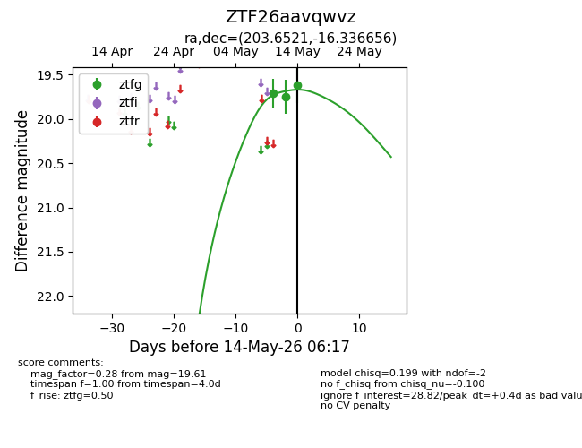
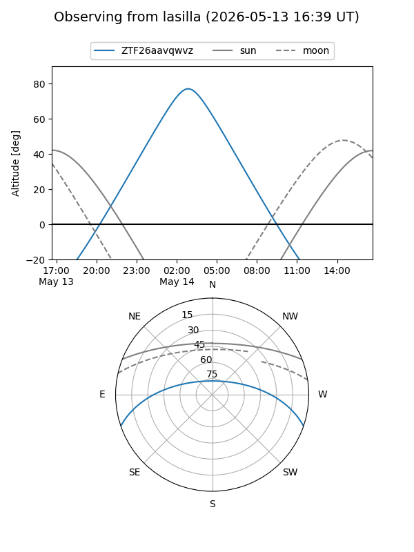
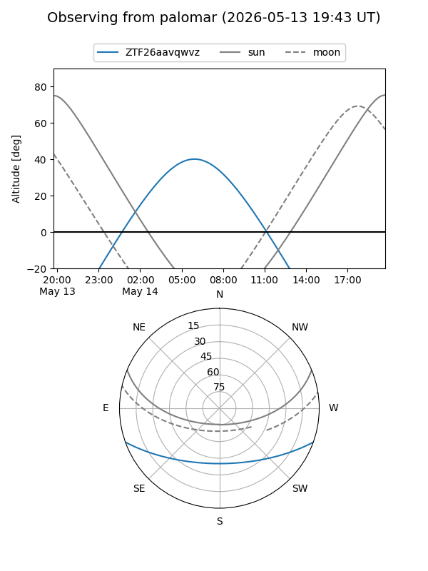
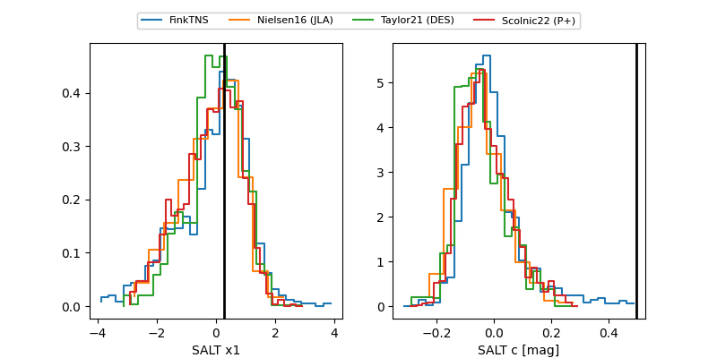

ZTF26aavqwvz
Target ZTF26aavqwvz at 2026-05-14 06:19
Aliases and brokers:
FINK: link
Lasair: link
ALeRCE: link
alt names
ZTF26aavqwvz (ztf,fink_ztf)
Coordinates:
equatorial (ra, dec) = 203.6521,-16.33666
equatorial (HMS+DMS) = 13:34:36.52,-16:20:11.96
galactic (l, b) = (317.7309,+45.29097)
Flags:
Photometry:
last ztfg=19.61
3 ztfg detections
Lightcurve

Visibility


Additional plots
